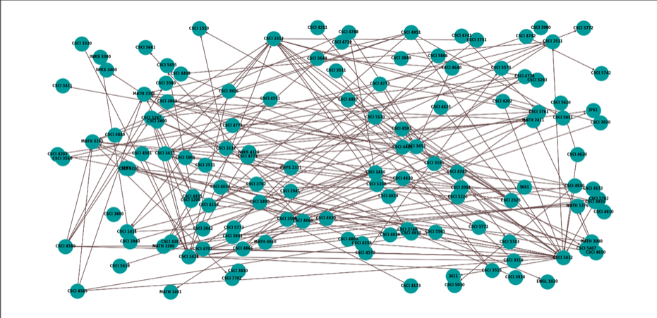
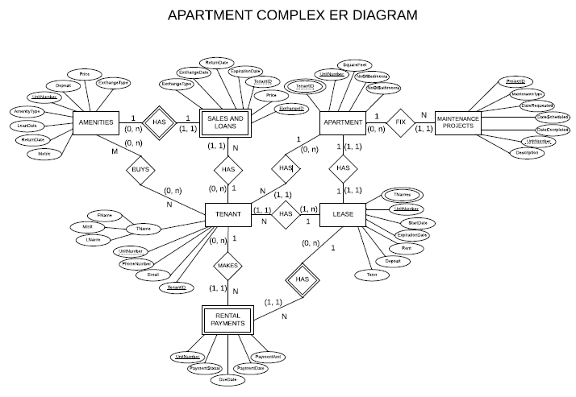
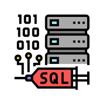
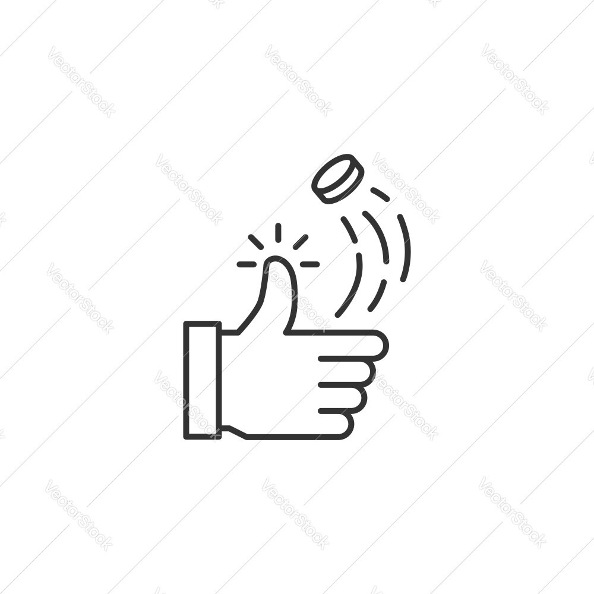
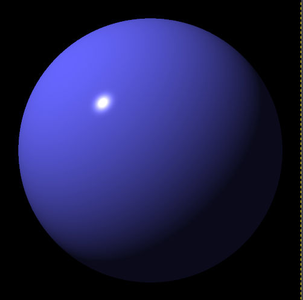
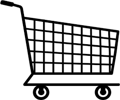

About Me
I'm a student pursuing a Bachelor's in Computer Science at the
University of Colorado Denver. I expect to graduate in May 2026.
My passion for computers has been a constant since I was young
and learning more about how they function naively led me to this degree.
“Computer Science is no more about computers than astronomy is about telescopes” -Dijkstra
Learning while working through this degree has shown me the depth and scope of what Computer Science actually is.
My love of computers has grown into a love of the science behind computers and allowed me to dive into subjects
that I would have thought scary and too challenging for me. I have learned that I love the challenges and
complexities that Computer Science introduces in its pursuit of utilizing technology to solve difficult problems.
Lately I have been exploring networking and cybersecurity concepts.
Through TCSA I have been able to participate in exciting competitions such
as: Hivestorm 2024, Mountain West Cybersecurity Competition, and RMCCDC. Completing
labs in my free time continues to teach me amazing new skills.
My Projects
-
Web Scraping Exploration
Python, Data VisualizationRepository
-
Apartment Complex Database
Database Design, SQL, phpMyAdminRepository
-
Injection Traffic Lab
SQL, WiresharkReport
-
Coin Flip Simulation
Python, Probability/Statistics, SimulationCoin Flip Simulation
-
Movie Collection Group Project
PHP, HTML, CSS, SQL, phpMyAdminRepository
-
Ray Tracer
Javascript, Computer GraphicsRepository
-
Distributed File Sharing System
C Standard, Network ProgrammingRepository
-
Sentiment Scorer
RustRepository
-
tinyMart - OOP Marketplace Simulator
C#, OOP MethodologyRepository
UML